定义
对任意的n个实数x1，x2，…，xn，则n个事件{X1≤x1}，{X2≤x2}，…，{Xn≤xn}同时发生的概率F（x1，x2，…，xn）＝P（X1≤x1，X2≤x2，…，Xn≤xn）称为n维随机变量（X1，X2，…，Xn）的联合分布函数．
联合分布函数F（x，y）的基本性质
①单调性：F（x，y）分别对x或y是单调非减的，即当x1＜x2时，有F（x1，y）≤F（x2，y），当y1＜y2时，有F（x，y1）≤F（x，y2）．
②有界性：对任意的x或y，有0≤F（x，y）≤1，且
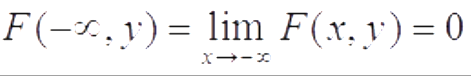
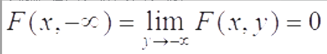
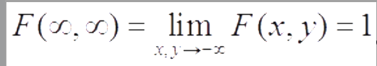
③右连续性：对每个变量都是右连续的，即F（x＋0，y）＝F（x，y），F（x，y＋0）＝F（x，y）．
④非负性：对任意的a＜b，c＜d有P（a＜X≤b，c＜Y≤d）＝F（b，d）－F（a，d）－F（b，c）＋F（a，c）≥0
定义：如果存在二元非负函数P（x，y），使得二维随机变量（x，y）的分布函数F（x，y）可表示为
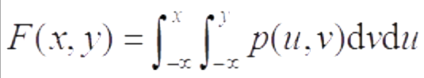
则称（X，Y）为二维连续随机变量，称P（u，v）为（X，Y）的联合密度函数．若F（x，y）偏导数存在，则有联合密度函数
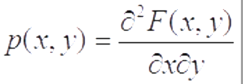
联合密度函数的基本性质：
①非负性：p（x，y）≥0；
②正则性：
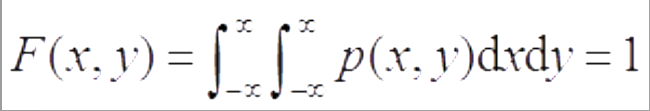
若G为平面上的一个区域，则事件{（X，Y）∈G}的概率可表示为在G上对p（x，y）的二重积分．注：在使用上式时，关键是找出p（x，y）的非零区域与G的交集部分，确定积分区域，然后设法化成累次积分，最后计算出结果，计算中要注意如下事实，“直线的面积为零”，故积分区域的边界线是否在积分区域内不影响概率计算结果．
如果在二维随机变量（X，Y）的联合分布函数F（x，y）中令y→∞，由于{Y＜∞}为必然事件，故可得
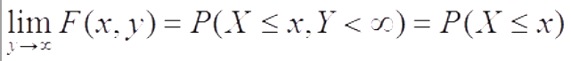
这是由（X，Y）的联合分布函数F（X，Y）求得的X的分布函数，被称为X的边际分布，记为FX（X）＝F（X，∞）．
类似地，在F（X，Y）中令x→∞，可得Y的边际分布FY（y）＝F（∞，y）．
在二维离散随机变量（X，Y）的联合分布列{P（X＝xi，Y＝yj）}中，对j求和所得的分布列
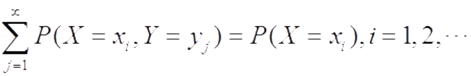
被称为X的边际分布列．
类似地，对i求和所得的分布列
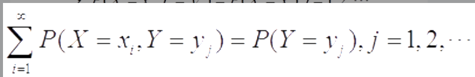
称为Y的边际分布列．
如果二维连续随机变量（X，Y）的联合密度函数为p（x，y），因为
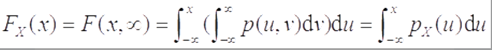
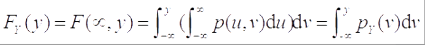
其中pX（x）和pY（y）分别为
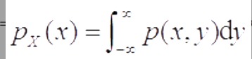
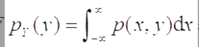
它们恰好处于密度函数位置，故称上式给出的pX（x）为X的边际密度函数，pY（y）为Y的边际密度函数．
注意：由联合密度函数求边际密度函数时，要注意积分区域的确定．具有相同边际分布的多维联合分布可以是不同的．
定义：设n维随机变量（X1，X2，…，Xn）的联合分布函数为F（x1，x2，…，xn），Fi（xi）为Xi的边际分布函数．如果对任意n个实数X1，X2，…，Xn，有
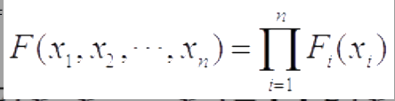
则称X1，X2，…，Xn相互独立．
对于离散随机变量，如果对其任意n个实数x1，x2，…，xn，有
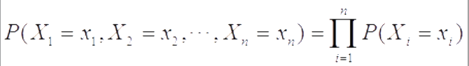
则称X1，X2，…，Xn相互独立．
对于连续随机变量，如果对任意n个实数x1，x2，…，xn，有
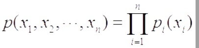
则称X1，X2，…，Xn相互独立．
注意：证明随机变量是否独立时，常用定义来证明．
定义：设（X，Y）是一个二维随机变量，若E[（X－E（X））（Y－E（Y））]存在，则称此数学期望为X与Y的协方差，或称为X与Y的相关（中心）矩，并记为
Cov（X，Y）＝ E[（X－E（X））（Y－E（Y））]；
特别有Cov（X，X）＝Var（X）．
注意：协方差可正可负，也可为零．
性质：Cov（X，Y）＝E（XY）－E（X）E（Y）
若随机变量X与Y相互独立，则Cov（X，Y）＝0．反之不然．（表明“不相关”是比“独立”更弱的一个概念，因为相关性只是指一种线性关系，而独立性则是一种更广的关系，包括平方关系，对数关系）．
对任意二维随机变量（X，Y），有Var（X±Y）＝Var（X）＋Var（Y）±2Cov（X，Y）推广到更多个随机变量场合，即对任意n个随机变量X1，X2，…，Xn，
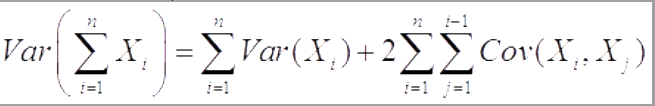
协方差Cov（X，Y）的计算与X，Y的次序无关，即Cov（X，Y）＝Cov（Y，X）．
任意随机变量X与常数a的协方差为零，即Cov（X，a）＝0．
对任意常数a，b，有Cov（aX，bY）＝abCov（X，Y）．
设X，Y，Z是任意三个随机变量，则Cov（X＋Y，Z）＝Cov（X，Z）＋Cov（Y，Z）．